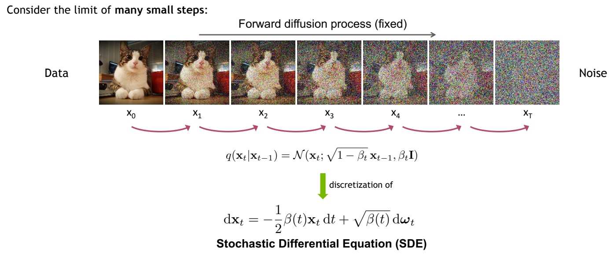
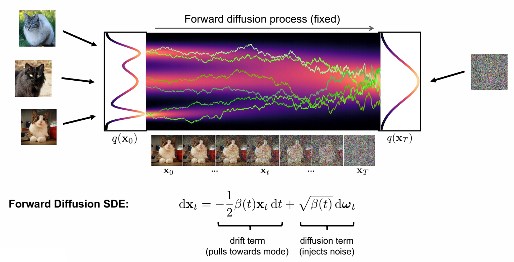
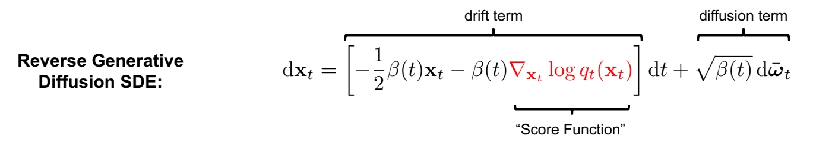
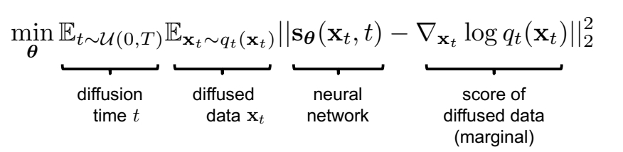
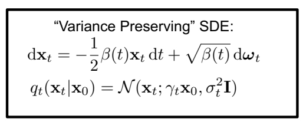
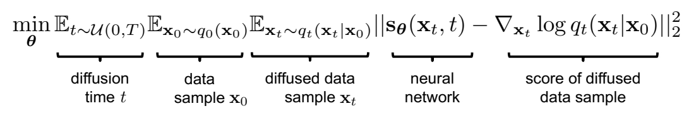
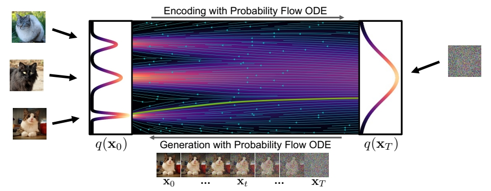

P22
Score-based Generative Modeling with Differential Equations
| ID | Year | Name | Note | Tags | Link |
|---|---|---|---|---|---|
| 2021 | Score-Based Generative Modeling through Stochastic Differential Equations | link |
P26
DDPM VS Stochastic Differential Equation
🔎 SDE 
✅ DDPM 是在时间上做了离散化的 SDE．
P27
Forward Diffusion Process as Stochastic Differential Equation

✅ drift term 使 \( \mathbf{x} _ t\) 趋向于 Origin.
✅ Origin 我理解为 \( \vec{0} \) 向量的意思。
✅ \( \mathbf{x} _ t\) 最终趋向于 std normal.
P29
The Generative Reverse Stochastic Differential Equation

🔎 Anderson, in Stochastic Processes and their Applications, 1982
✅ \(q _ t(\cdot )\) 描述 \(t\) 时刻的分布。
✅ \(q _ t(\mathbf{x} _ t)\) 为 \(\mathbf{x} _ t\) 在 \(q _ t\) 分布中的概率。
✅ Generative 的关键是拟合 score funchon．
But how to get the score function \(\nabla \mathbf{x} _t \log q_t(\mathbf{x} _t)\)?
P32
Score Matching
Naïve idea, learn model for the score function by direct regression?

✅ 直接用一个网络拟合 score function．
But \(\nabla \mathbf{x} _t \log q_t(\mathbf{x} _t)\) (score of the marginal diffused density \(q_t(\mathbf{x} _t)\)) is not tractable!
✅ 存在的问题：只能 sample from \(q_t\)，但没有 \(q_t\) 的 close form.
Vincent, “A Connection Between Score Matching and Denoising Autoencoders”, Neural Computation, 2011
Song and Ermon, “Generative Modeling by Estimating Gradients of the Data Distribution”, NeurIPS, 2019
P33
Denoising Score Matching
Instead, diffuse individual data points \(\mathbf{x}_0\). Diffused \(q_t(\mathbf{x}_t|\mathbf{x}_0)\) is tractable!
🔎 Vincent, in Neural Computation, 2011

❓ \(\gamma _ t\) 和 \(\sigma\) 怎么定义？ 答：见上一页DDPM的推导。
因此Denoising Score Matching的目标函数变为:

After expectations, \(\mathbf{s} _ \theta (\mathbf{x} _ t,t)\approx \nabla _ {\mathbf{x} _ t}\log q _ t(\mathbf{x} _ t)\)!
🔎 Song and Ermon, NeurIPS, 2019
✅ 最后 \(\mathbf{s} _ \theta (\mathbf{x} _ t,t)\) 学到的是所有 \(\mathbf{x} _ 0\) 对应的 score 的均值。
✅ 结果发现时间离散的 diffusion model(DDPM) 和时间连续的 diffusion model(SDE),其目标函数是一致的，且两个版本可以互相转化。
$$ \min_ {\mathbf{\theta} } \mathbb{E} _ {t\sim u(0,T)}\mathbb{E} _ {\mathbf{x} _ 0\sim q_ 0(\mathbf{x} _ 0)}\mathbb{E} _{\epsilon \sim \mathcal{N}(\mathbf{0,I} ) }\frac{1}{\sigma ^2_t} ||\epsilon -\epsilon _ \theta (\mathbf{x} _ t,t)||^2_2 $$
P35
Different Parameterizations
🔎 Karras et al., "Elucidating the Design Space of Diffusion-Based Generative Models", NeurIPS 2022 link
✅ 调参对生成质量影响很大。
P36
Synthesis with SDE vs. ODE
Generative Reverse Diffusion SDE (stochastic):
$$ d\mathbf{x} _ t=-\frac{1}{2} \beta (t)[\mathbf{x} _ t+2s_ \theta (\mathbf{x} _ t,t)]dt+\sqrt{\beta (t)} d\varpi _ t $$
Generative Probability Flow ODE (deterministic):
$$ d\mathbf{x} _ t=-\frac{1}{2} \beta (t)[\mathbf{x} _ t+s_ \theta (\mathbf{x} _ t,t)]dt $$
✅ Song et al., ICLR, 2021表明，可以把 SDE 模型转换为ODE模型。只需要对sample过程进行公式修改即可。每个噪声对应特定的输出。
P37
Diffusion Models as Neural ODEs

使用ODE的sample公式有以下好处：
- ODE 推断，可以使用成熟的 ODE solver 进行 sample 加速。
- Deterministic encoding and generation (semantic image interpolation, etc.)
- Log-likelihood computation (instantaneous change of variables):
❓ 第三条没听懂，把 model 当成基于数据的 ODE 来用？
More
- ScoreSDE: simple linear problems, e.g., inpainting, colorization; later extended to MRI and CT.
- ILVR: more linear problems, e.g., super-resolution.
- SNIPS: slow solution for noisy linear problems.
- CCDF: better initializations.
- DDRM: fast solution for all noisy linear problems, and JPEG.
本文出自CaterpillarStudyGroup，转载请注明出处。
https://caterpillarstudygroup.github.io/ImportantArticles/